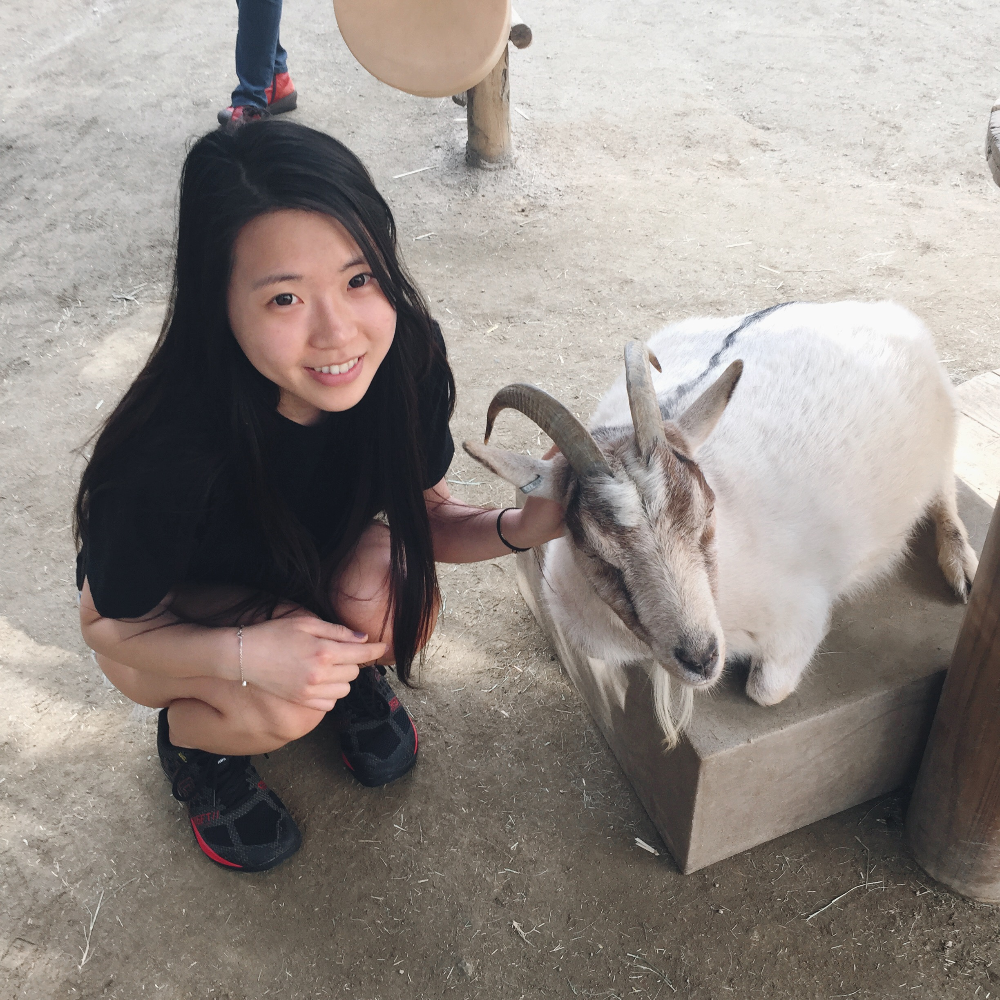

UC Davis Design Career Exploration Tool is a project that will focus on helping students explore their career options after graduating from college. Often times, many students major in and study design knowing that they are passionate about the subject or simply because they excel in the subject matter. But once graduation starts approaching or once they've graduated, they suddenly get thrown out into the real world not know what they want to do with their major. There aren't many resources on campus for students to explore what they want to do with their design major post graduation. And because of this, I wanted to create a career exploration tool specific towards design students to help them explore their options.

Name: Michelle Chu
Age: 21
Occupation: Student
Location: Northern California
Goals:
- Achieving parents' expectations
- Prove to self that as long as I'm determined and I will work for it
- Can achieve anything
- Going to dental school, designing scientific molds for teeth
Meet Michelle! She is a 4th year undergraduate student at UC Davis studying animal science. Her passion lies with animals and has always wanted to become a vet. But recently, the route she's always wanted to go towards has taken a big turn and she doesn't quite know what she wants to do in the future anymore. In the time she's been in college, she's been actively involved in student organizations and interned in numberous research facilities to fuel her passion in studying animal science. In her free time, she really enjoys winding down and hanging out with friends, whether it's going to the movies or grabbing some ice cream. Michelle has quite a heavy workload compared to other students, so in order to stay awake and on the go, she is always drinking Starbucks to keep herself alert. But with her recent turn in career plans, she is quite lost because she hasn't exactly had the opportunities to explore different fields and industries to see what she is interested in. She is the perfect example as someone who could use this site to explore career and industry options (in the design field).
By creating this website, I want to help bring awareness to the design students that there is a tool that's here for you to help you take the first step to explore what types of jobs or careers you may want to pursue in the future. A lot of the times, students always feel really lost because they are under the pressure of graduation and they don't know what they want to do yet. But I want to create a culture of sharing where design students have the freedom to explore their interests. Even after using this exploration tool, they don't have to know what career they want to go into right away but in a way, this tool will help them start somewhere and even let them take away a few ideas for them to do more research on on their own.
Explore your options on how you can turn your passion for design into a career.
I plan to follow the university's graphic standard just so we have a sense of unity, such as using the main UC Davis colors and Proxima typeface, but at the same time there will be minor changes in design to match the idea and feel of the site. I want to create an emotional design for this site, such as having rounded rectangles and soft colors so make the site seem more friendly. Job hunting is already a very stressful and intimidating process, so I want to make this process of exploring different careers a friendly and approachable one; creating an experience that users want to come back to and feel comfortable confiding in.
Get started exploring your future careers in design here and see how expansive the design field really is!